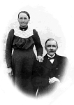

Tilda Agatha Grahn
Blev 67 år.
| Född: | 1865-02-04 Norsjö 2, Sörbyn, Norsjö fs, Norsjö sn. [1] | |
|---|
| Död: | 1932-10-28 Grundfors 1, Björksele fs, Lycksele sn. [2] | Dödsorsak: Urencia. 5040 B. Umeå lasarett. |
|---|
| Levde: | 1883 Norsjö 2, Sörbyn, Norsjö fs, Norsjö sn. [3] | |
|---|
| Vigsel: | 1883-11-21 Norsjö 2, Sörbyn, Norsjö fs, Norsjö sn. [4] | |
|---|
| Omflyttad till: | 1888 Norsjö 3, Sörbyn, Norsjö sn. [5] | |
|---|
| Utflyttad från: | 1890-12-29 Norsjö 3, Sörbyn, Norsjö sn. [5] | Utfl.attest nr 48/1890. |
|---|
| Inflyttad till: | 1890-12-30 Zefansvik 1, Björksele, Lycksele sn. [6] | |
|---|
| Omflyttad till: | 1912 Grundfors 1, Lycksele sn. [7] | |
|---|
| Levde: | 1920 Grundfors 1, Björksele, Lycksele sn. [7] | |
|---|
Personhistoria
| Årtal | Ålder | Händelse |
|---|
| 1865 |
|
Födelse 1865-02-04 Norsjö 2, Sörbyn, Norsjö fs, Norsjö sn [1] |
| 1866 |
1 år |
Brodern Karl Jakob Grahn föds 1866-04-07 Norsjö 2, Sörbyn, Norsjö fs, Norsjö sn [1] |
| 1868 |
3 år |
Brodern Per Edvard Gran föds 1868-07-12 Norsjö 2, Sörbyn, Norsjö fs, Norsjö sn [1] |
| 1870 |
5 år |
Systern Maria Eugenia Grahn föds 1870-09-01 Norsjö 2, Sörbyn, Norsjö fs, Norsjö sn [1] |
| 1870 |
5 år |
Systern Maria Eugenia Grahn dör 1870-09-18 Norsjö 2, Sörbyn, Norsjö fs, Norsjö sn [8] |
| 1872 |
|
Systern Maria Eugenia Grahn dör 1872 Norsjö, Norsjö sn [9] |
| 1872 |
7 år |
Systern Maria Eugenia Grahn föds 1872-02-28 Norsjö 2, Sörbyn, Norsjö fs, Norsjö sn [9] |
| 1873 |
8 år |
Brodern Frans Johan Qvintin Grahn föds 1873-03-11 Norsjö 2, Sörbyn, Norsjö fs, Norsjö sn [10] |
| 1875 |
10 år |
Brodern Jonas Palmert Sten Grahn föds 1875-03-26 Norsjö 2, Sörbyn, Norsjö fs, Norsjö sn |
| 1877 |
12 år |
Systern Alfina Maria Petunia Grahn föds 1877-03-07 Norsjö 2, Sörbyn, Norsjö fs, Norsjö sn [9] |
| 1878 |
13 år |
Brodern Olof Arvid Engelbert Grahn föds 1878-12-15 Norsjö 2, Sörbyn, Norsjö fs, Norsjö sn |
| 1880 |
15 år |
Brodern August Bolander Grahn föds 1880-11-20 Norsjö 2, Sörbyn, Norsjö fs, Norsjö sn |
| 1882 |
17 år |
Brodern Bilof Anders Grahn föds 1882-09-25 Norsjö 2, Sörbyn, Norsjö fs, Norsjö sn |
| 1883 |
|
Levde Frans Edvard Fredman 1883 Norsjö 2, Sörbyn, Norsjö fs, Norsjö sn [3] |
| 1883 |
18 år |
Vigsel Frans Edvard Fredman 1883-11-21 Norsjö 2, Sörbyn, Norsjö fs, Norsjö sn [4] |
| 1884 |
19 år |
Sonen Frans Oskar Fredman föds 1884-06-02 Norsjö 2, Sörbyn, Norsjö fs, Norsjö sn [11] |
| 1885 |
20 år |
Systern Linda Magdalena Kristina Grahn föds 1885-07-16 Zefansvik 1, Björksele, Lycksele sn |
| 1886 |
20 år |
Dottern Jenny Sofia Fredman föds 1886-01-28 Norsjö 2, Sörbyn, Norsjö fs, Norsjö sn [12] |
| 1886 |
21 år |
Dottern Jenny Sofia Fredman dör 1886-02-21 Norsjö 2, Sörbyn, Norsjö fs, Norsjö sn [13] |
| 1888 |
|
Omflyttad till Frans Edvard Fredman 1888 Norsjö 3, Sörbyn, Norsjö sn [5] |
| 1889 |
24 år |
Sonen Fritz Eugen Fredman föds 1889-06-05 Björksele fs, Lycksele sn [14] |
| 1890 |
25 år |
Utflyttad från Frans Edvard Fredman 1890-12-29 Norsjö 3, Sörbyn, Norsjö sn [5] |
| 1890 |
25 år |
Inflyttad till Frans Edvard Fredman 1890-12-30 Zefansvik 1, Björksele, Lycksele sn [6] |
| 1892 |
27 år |
Modern Maria Agatha Persdotter dör 1892-05-29 Zefansvik 1, Björksele, Lycksele sn [15] |
| 1895 |
29 år |
Sonen Johan Edvard Fredman föds 1895-01-01 Zefansvik 1, Björksele, Lycksele sn |
| 1895 |
29 år |
Sonen Johan Edvard Fredman dör 1895-01-10 Zefansvik 1, Björksele, Lycksele sn |
| 1895 |
30 år |
Halvbrodern Erik Valdemar Grahn föds 1895-10-02 Zefansvik 1, Björksele, Lycksele sn [16] |
| 1896 |
31 år |
Sonen Johan Ferdinand Fredman föds 1896-04-03 Zefansvik 1, Björksele fs, Lycksele sn [17] |
| 1898 |
33 år |
Halvsystern Eva Karolina Johanna Grahn föds 1898-05-17 Zefansvik 1, Björksele, Lycksele sn [16] |
| 1901 |
36 år |
Dottern Rut Augusta Maria Fredman föds 1901-09-09 Zefansvik 1, Björksele, Lycksele sn |
| 1905 |
40 år |
Sonen Harald Ingevald Paulin Fredman föds 1905-09-13 Zefansvik 1, Björksele, Lycksele sn |
| 1912 |
|
Omflyttad till Frans Edvard Fredman 1912 Grundfors 1, Lycksele sn [7] |
| 1920 |
|
Levde Frans Edvard Fredman 1920 Grundfors 1, Björksele, Lycksele sn [7] |
| 1920 |
55 år |
Sonen Fritz Eugen Fredman dör 1920-04-22 Zefansvik 1, Björksele, Lycksele sn [18] |
| 1920 |
55 år |
Fadern "Jon-Jaksa" Jonas Jakobsson Grahn dör 1920-11-12 Zefansvik 1, Björksele, Lycksele sn [19] |
| 1931 |
65 år |
Brodern August Bolander Grahn dör 1931-01-04 Vancouver, British Columbia, Canada [20] |
| 1932 |
67 år |
Död 1932-10-28 Grundfors 1, Björksele fs, Lycksele sn [2] |
Källor
| [1] | Norsjö AI:6 (1862-1871) fol. 5 k.1/9 |
| |
| | |
| [2] | Björksele AIIA:1 (1923-1933) fol. 113 k.3/6 |
| |
| | |
| [3] | Norsjö AI:8 (1881-1891) fol. 7 k.1/13 |
| |
| | |
| [4] | Norsjö AI:8 (1882-1891) fol. 7 k.1/13, Lycksele AI:14B (1890-1899) fol. 644 k.27/29 |
| |
| | |
| [5] | Norsjö AI:8 (1881-1891) fol. 8 k.1/13 |
| |
| | |
| [6] | Lycksele AI:14B (1890-1899) fol. 644 k.27/29 |
| |
| | |
| [7] | Lycksele AII:1B (1900-1920) fol. 357 k.4/6 |
| |
| | |
| [8] | Norsjö F:2 (1860-1889) s.20 k.1/2, AI:6 (1862-1871) fol. 5 k.1/9 |
| |
| | |
| [9] | Norsjö AI:7 (1872-1881) fol. 5 k.1/11 |
| |
| | |
| [10] | Norsjö C:3 (1865-1875) k.2/3, AI:7 (1872-1881) fol. 5 k.1/11 |
| |
| | |
| [11] | Norsjö C:4 (1883-1888) 65/1884 k.2/6, AI:8 (1882-1891) fol. 8 k.1/13, Lycksele AI:14B (1890-1899) fol. 644 k.27/29 |
| |
| | |
| [12] | Norsjö C:4 (1883-1888) 19/1886 s.40 k.2/6, AI:8 (1882-1891) fol. 7 k.1/13 |
| |
| | |
| [13] | Norsjö F:2 (1860-1889) s.50 k.1/2, AI:8 (1882-1891) fol.7 k.1/13 |
| |
| | |
| [14] | Norsjö C:4 (1888-1892) 86/1889 s.68 k.3/6, AI:8 (1882-1891) fol. 8 k.1/13, Lycksele AI:14B (1890-1899) fol. 644 k.27/29 |
| |
| | |
| [15] | Lycksele F:3 (1890-1895) 60/1892 s.92 k.4/5, AI:1B (1890-1899) fol. 643 k.27/29 |
| |
| | |
| [16] | Lycksele AII:1B (1890-1899) fol. 643 k.27/29, Björksele AIIA:1 (1923-1933) fol. 141 k.3/6 |
| |
| | |
| [17] | Lycksele AII:1B (1890-1899) fol. 644 b.27/29 |
| |
| | |
| [18] | Lycksele AII:1E (1900-1920) fol. 1110 k.5/7, F:5 (1913-1927) |
| |
| | |
| [19] | Björksele AIIA:1 (1923-1933) fol. 141 k.3/6, AII:2 D (1920-1930) fol. 1270 k.2/9 |
| |
| | |
| [20] | G. Lundström, Björkseleboken s.36 |
| |
|
|  |
| Tilda Grahn och Edvard Fredman. |
|
{kind=link}